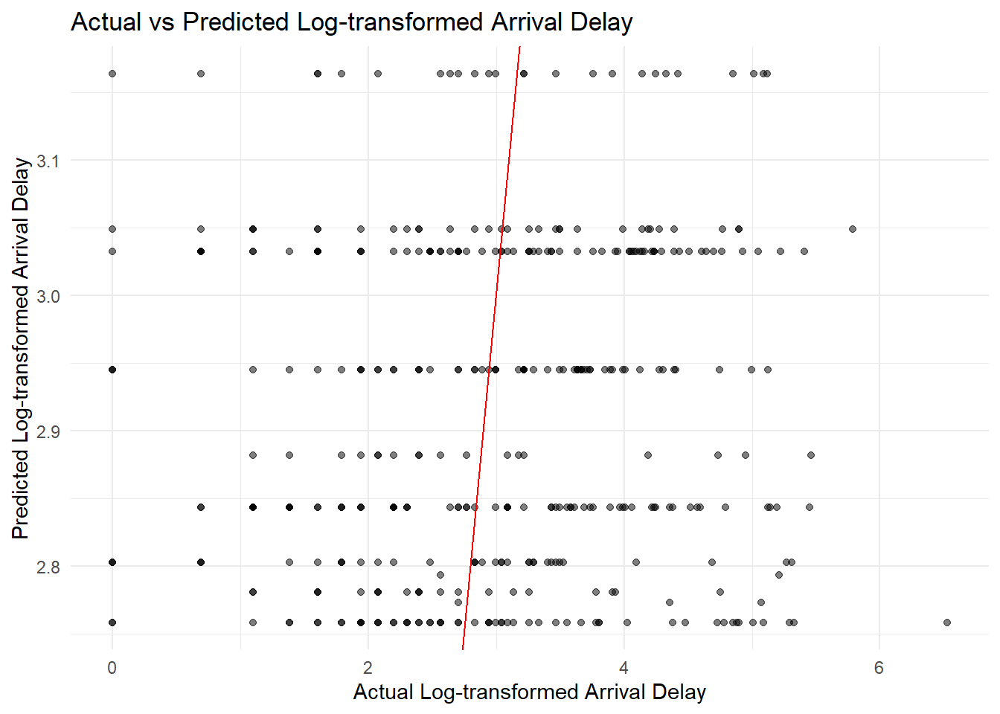

Chapter 6 Generalized Additive Model
By Sheptim Veseli
6.1 Introduction
The Generalized Additive Model (GAM) represents an advanced statistical approach designed to capture non-linear relationships between predictor and response variables. GAMs extend linear models by allowing non-linear functions of predictor variables while maintaining additivity. This flexibility makes GAMs particularly useful in scenarios where the relationship between variables is complex and cannot be adequately modeled with simple linear terms. In this report, we apply GAM to predict the log-transformed flight arrival delays using the ‘carrier’ variable from the nycflights13 dataset. This analysis aims to assess the effectiveness of GAM in modeling flight delays and uncover patterns associated with different airlines.
6.2 Data Preparation
The dataset used in this analysis is a subset of the nycflights13 dataset, consisting of 5000 randomly selected flights. The following steps were undertaken to prepare the data:
# Set random seed for reproducibility
set.seed(123)
# Randomly select 5000 rows and use them to subset original data
selected_indices <- sample(1:nrow(flights), 5000, replace = FALSE)
flights_subset <- flights[selected_indices, ]A random sample of 5000 rows was selected from the original dataset to create a manageable subset for analysis. Handling Missing Values: Rows with missing values in critical variables such as dep_time, arr_time, arr_delay, tailnum, and air_time were removed to ensure data integrity. Removing Negative Arrival Delays: Rows with negative values for arr_delay were eliminated as they do not represent valid flight delay times.
Code Preview
# Remove rows with missing values in key variables
flights_subset <- flights_subset[complete.cases(flights_subset$dep_time, flights_subset$arr_time, flights_subset$arr_delay, flights_subset$tailnum, flights_subset$air_time), ]
# Remove NA and negative values from arrival delay time (arr_delay)
flights_subset <- flights_subset[complete.cases(flights_subset$arr_delay) & flights_subset$arr_delay >= 0, ]6.3 Data Splitting & Model Fitting
The data was split into training (80%) and test (20%) sets for model evaluation. This step ensures that the model’s performance is evaluated on unseen data, providing a more realistic assessment of its predictive capabilities.
# Split the data into training and test sets
set.seed(123) # Set seed for reproducibility
train_index <- createDataPartition(flights_subset$log_arr_delay, p = 0.8, list = FALSE)
train_data <- flights_subset[train_index, ]
test_data <- flights_subset[-train_index, ]A Generalized Additive Model was fitted to the training data with the following specifications:
Response Variable: log_arr_delay
Predictor Variable: carrier (as a factor with a smooth term)
The model formula used was: log_arr_delay∼s(carrier,bs=“re”) log_arr_delay∼s(carrier,bs=“re”) where s(carrier, bs = “re”) indicates a smooth term for the carrier variable using a random effects basis spline.
# Fit a Generalized Additive Model
gam_model <- gam(log_arr_delay ~ s(carrier, bs = "re"), data = train_data)6.3.1 Model Summary
The summary of the fitted GAM is as follows:
Family: Gaussian
Link Function: Identity
Intercept: 2.88605 (Std. Error: 0.06721, p < 2e-16)
Smooth Terms: s(carrier): edf = 6.945, Ref.df = 14, F = 1.4, p = 0.00212
Model Performance: Adjusted
R-squared: 0.011
Deviance Explained: 1.52%
Generalized Cross-Validation (GCV) Score: 1.6482
Scale Estimate: 1.6402
Number of Observations: 1643
Code Preview
##
## Family: gaussian
## Link function: identity
##
## Formula:
## log_arr_delay ~ s(carrier, bs = "re")
##
## Parametric coefficients:
## Estimate Std. Error t value Pr(>|t|)
## (Intercept) 2.88605 0.06721 42.94 <2e-16 ***
## ---
## Signif. codes: 0 '***' 0.001 '**' 0.01 '*' 0.05 '.' 0.1 ' ' 1
##
## Approximate significance of smooth terms:
## edf Ref.df F p-value
## s(carrier) 6.945 14 1.4 0.00212 **
## ---
## Signif. codes: 0 '***' 0.001 '**' 0.01 '*' 0.05 '.' 0.1 ' ' 1
##
## R-sq.(adj) = 0.011 Deviance explained = 1.52%
## GCV = 1.6482 Scale est. = 1.6402 n = 1643The intercept of 2.88605 represents the baseline log-transformed arrival delay when the carrier effect is not considered. The significant smooth term for the carrier variable (p = 0.00212) indicates that different airlines have different patterns of arrival delays. The effective degrees of freedom (edf) for the carrier term suggests a moderately complex relationship. However, the adjusted R-squared value of 0.011 and the deviance explained of 1.52% indicate that the carrier variable alone does not explain much of the variability in arrival delays. This low explanatory power suggests that other factors not included in this model, such as weather conditions, airport congestion, and specific aircraft issues, are likely to play a significant role in influencing arrival delays. These findings align with expectations, as flight delays are typically influenced by a multitude of factors beyond the airline carrier alone.
6.3.2 Model Evaluation
The model was evaluated on the test set, yielding the following performance metrics:
## Mean Squared Error: 1.576027## Root Mean Squared Error: 1.255399The MSE and RMSE indicate the average squared difference and the square root of this average, respectively, between the actual and predicted log-transformed arrival delays. These metrics provide a quantitative measure of the model’s prediction accuracy. The RMSE value of approximately 1.255 suggests that the model’s predictions are, on average, within 1.255 units of the actual log-transformed arrival delays. Next,the scatterplot below compares the actual log-transformed arrival delays with the predicted values from the GAM model. The red line represents the ideal fit where predicted values equal actual values. The scatterplot indicates a spread around the red line, reflecting the model’s predictions. The spread suggests variability in prediction accuracy, which is expected given the low R-squared value.

Summary Preview
##
## Family: gaussian
## Link function: identity
##
## Formula:
## log_arr_delay ~ s(carrier, bs = "re")
##
## Parametric coefficients:
## Estimate Std. Error t value Pr(>|t|)
## (Intercept) 2.88605 0.06721 42.94 <2e-16 ***
## ---
## Signif. codes: 0 '***' 0.001 '**' 0.01 '*' 0.05 '.' 0.1 ' ' 1
##
## Approximate significance of smooth terms:
## edf Ref.df F p-value
## s(carrier) 6.945 14 1.4 0.00212 **
## ---
## Signif. codes: 0 '***' 0.001 '**' 0.01 '*' 0.05 '.' 0.1 ' ' 1
##
## R-sq.(adj) = 0.011 Deviance explained = 1.52%
## GCV = 1.6482 Scale est. = 1.6402 n = 16436.4 Conclusion
The application of GAM to predict flight arrival delays based on the carrier variable highlights the significance of airline-specific patterns in arrival delays. However, the low explanatory power of the model underscores the complexity of factors influencing flight delays. While the GAM captured some carrier-specific trends, it is evident that additional variables such as weather conditions, airport traffic, flight distance, and aircraft-specific issues need to be included to improve predictive performance. Future research should focus on incorporating these additional predictors to develop a more comprehensive model.